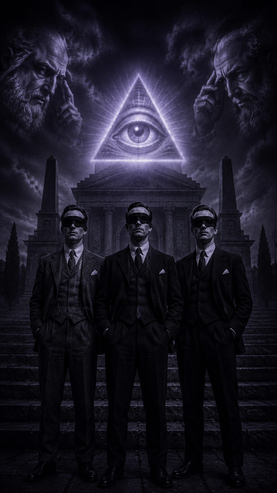

Ceremonien nærmer sig...
Vigtig information vil blive frigivet ved sidste klokkeslag...
00Dage
00Timer
00Minutter
00Sekunder

Logen har talt. De udvalgte er kaldt.
Ingen undslipper sin skæbne.
Lokation: Afventer
Afgang: Kl. 0800 — eller vær fortabt
Dresscode: Skjorte og jakkesæt
Logen tolererer ingen forsinkelse.
Den, der ikke står klar ved daggry,
efterlades i mørket.
Medbring: En velpresset skjorte.
Et jakkesæt værdigt en herre.
Punktlighed.
Yderligere oplysninger frigives,
når Logen finder det passende.
Forbered jer. Pak jer. Sov let.
Den uforberedte vil blive bemærket. Og husket.
Stil er ikke valgfrit.
Tømmermænd er stadig garanteret.
— LOGEN —
Logen har talt. De udvalgte er kaldt.
Ingen undslipper sin skæbne.
UNIFORMERING — INGEN UNDTAGELSER
Jakkesæt. Dertilhørende sko.
Pas bæres i inderlommen — altid.
Godt humør er ikke valgfrit.
Hjemmefra senest kl. 0800
— eller vær fortabt.
BRODERSKABETS PLIGTER
Det er Logens kendskab at Broder Jannick
besidder en naturlig glæde og smittende lune.
Han pålægges at bære broderskabets ånd
og medbringe 3 dåseøl til fællesskabet.
Logen omfavner hans kaos — og kanaliserer det.
To forskellige sokker skal bæres.
Han medbringer en tilfældig genstand
og fortæller en historie der er værdigen.
Hans kald er højt. Hans ansvar tungt.
Ingen broder fortabes. Ingen forsinker.
Punktlighed er hans våben og hans ære.
FÆRDENS GANG
Broder Jannick og Broder Daniel
drager hjemmefra i god tid og mødes ved
Vanløse Station — afgang kl. 08:15.
Den fortabte sjæl Kristian afventes ved
Frederiksberg Metro — kl. 08:25.
I metroen: én øl skåles.
Broder Distræts genstand præsenteres.
Broder Tid holder øje med uret.
Broderskabet ankommer til Lufthavnen.
Bevæg jer mod Terminal 3.
En repræsentant fra Logen har plantet
en besked. I vil blive fundet.
Svaghed observeres. Og huskes.
Tømmermænd er garanteret.
— LOGEN —